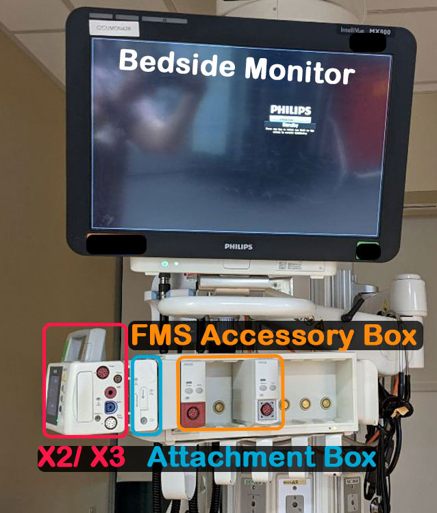

Tech Support

There are many “parts” to telemetry monitoring. In this section you can become more familiar with the technical aspects of telemetry Monitoring.
Check out the red tab to find out more information on each device. Click the blue tab to find answers to common technical questions you may be asked. Click the orange tab for a system guide.